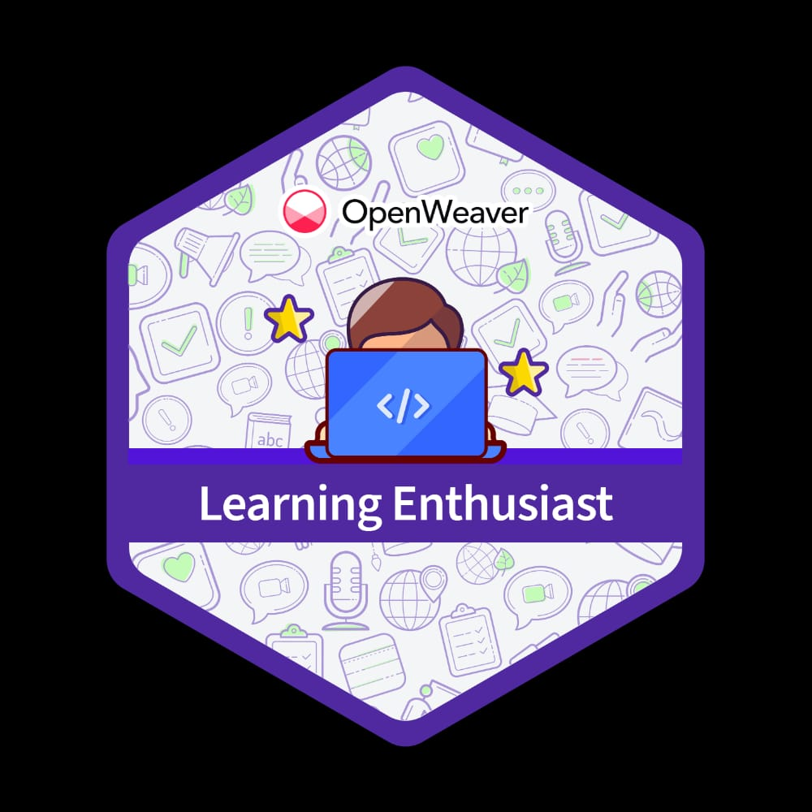
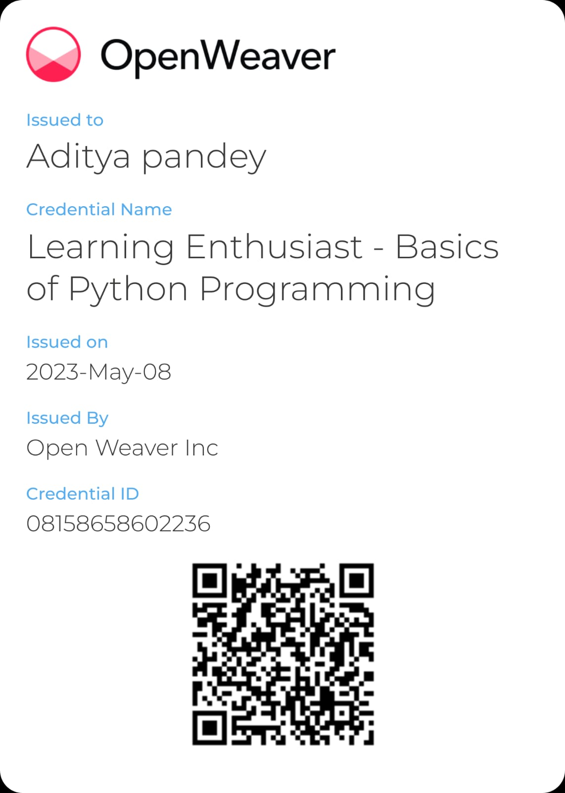

My resume
Aditya pandey

Summary
I am extremly hardworking student and have a deep passion in learning technology.I am very Disciplined and a
Well organised student.
Education
I have been educated from K.V.M public school and passed all grades with good marks.
class 12 percentage - 89%
Work experience
I have zero work experience but currently learning a skill to enter a step in corporate world.
Skills
I have learned basics of python programming from Code with Harry youtube channel and hold a certificate
of Basics of programmming from Open Weaver.
I also got some certifications and awards which i am attaching below:-
My basics of programming certification:-

